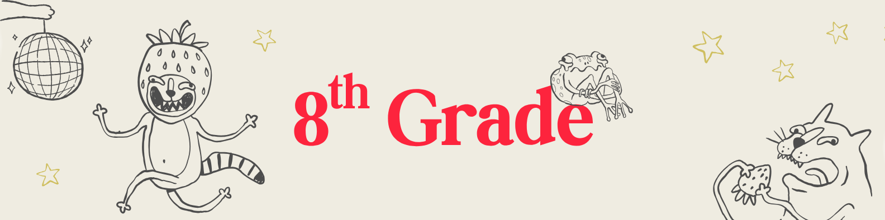

Graphic novels as literature. Read, analyze, then create your own digital chapter using visual storytelling and dialogue.
View Unit 1Engineering and making as writing. Document a LEGO or physical build from sketch to finished product — technical writing in action.
View Unit 2Code, AI, and the future. Write documentation for a Scratch project, then write a persuasive essay arguing your position on AI.
View Unit 3Music as language. Write lyrics, liner notes, and music journalism. Connect piano and electronic production to creative and expository writing.
View Unit 4Investigate, gather evidence, write. Choose a research question connected to your interests and produce a polished research paper.
View Unit 5Argument, evidence, and presence. Build a full persuasive essay and deliver a TED-style talk on a topic you genuinely care about.
View Unit 6